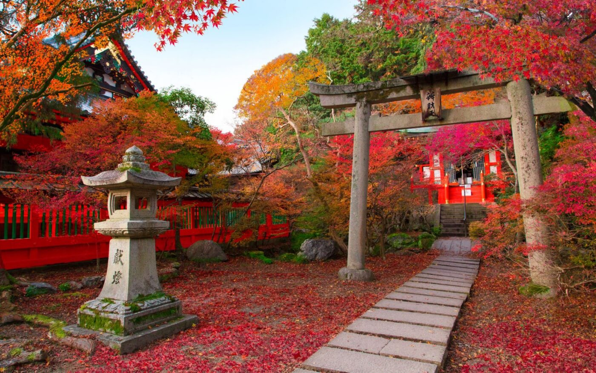

Qué festivales se pueden ver
- Momiji: Durante los meses de octubre y noviembre, los japoneses admiran las hojas de otoño con sus vibrantes colores.
- Danzas de otoño: Este festival que se celebra en Kioto, a finales de octubre y principios de noviembre, se hacen bailes tradicionales de geishas y maikos.
- Shichi-go-san: el 15 de noviembre, como su nombre lo indica se celebra a los niños de tres, cinco y siete años.
- Hachiman Matsuri: Es la segunda celebración anual del festival de la ciudad de takayama, se realiza en un santuario diferente.